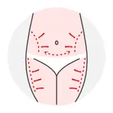
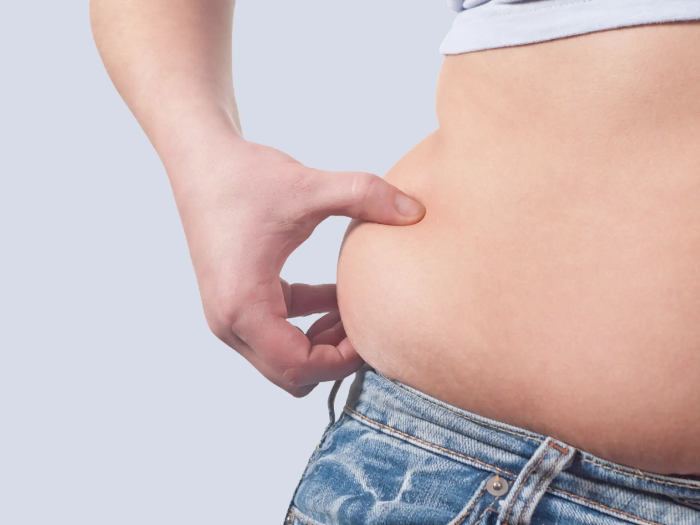
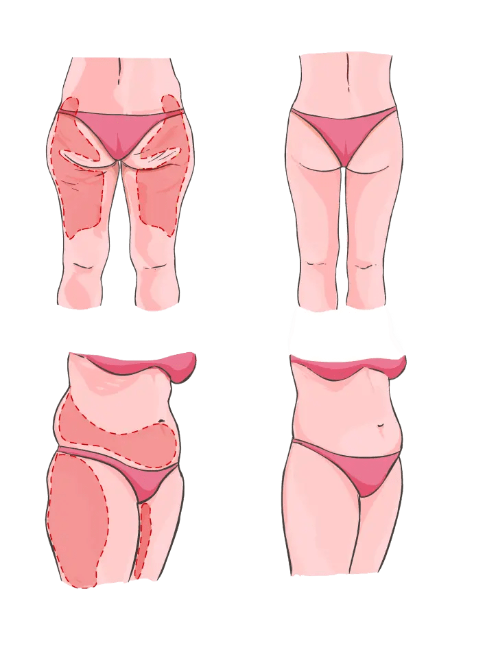

Ce este liposucția?
Mecanismul pe baza căruia funcționează liposucția presupune introducerea unor tuburi subțiri atraumatice (numite canule) prin mici incizii efectuate la suprafața pielii, pentru aspirația unor depozite grase specifice.

Ce tratează liposucția?
- Glezne
- Șolduri și fese
- Interiorul genunchiului
- Abdomen și talie
- Coapse (zona interioară și exterioară)
- Zona pieptului
- Brațe
- Obraji, bărbie și gât

Tipuri de liposucție
În ultimii ani, tehnicile îmbunătățite au transformat această procedură în una mai sigură, mai ușoară și mai puțin dureroasă. Principalele tipuri de lipoplastie folosite în prezent sunt:
Liposucția tumescentă
Folosește un anestezic local în regiunea în care sunt introduse canulele și o cantitate mai mare de substanțe anestezice (cu lidocaină și epinefrină) injectată în țesuturile grase înainte de efectuarea liposucției. Nu necesită, în general, anestezie generală.
Liposucția cu laser Vaser Lipo
Tehnologia Vaser a adus o revoluție în domeniul liposucției și liposculpturii cu ultrasunete. Procedura folosește ultrasunete cu o frecvență precisă pentru celulele de grăsime, care sunt desprinse de pe structura de susținere și apoi aspirate. Durerea, edemul și vânătăile sunt mult reduse.
Liposucția cu ultrasunete
Utilizează ultrasunetele pentru a transforma grăsimea în lichid, astfel încât aceasta să devină mai ușor de îndepărtat. Poate fi mai eficientă în aspirarea grăsimii din zona abdomenului superior, a taliei și a spatelui.
Cui se adresează această intervenție?
Liposucția este o alternativă de corectare a regiunilor corporale cu depuneri vizibile de grăsime, care nu au putut fi eliminate prin dietă și mișcare. Totodată, liposucția mai poate fi folosită în tratarea anumitor condiții medicale:
- Transpirația excesivă în zona axilelor (hiperhidroza axilară)
- Tumorile grase benigne (lipoamele)
- Tulburările de metabolizare a grăsimilor (lipodistrofia)
- Mărirea anormală a țesutului mamar bărbătesc (ginecomastia sau pseudoginecomastia)
Beneficiile liposucției
- Îndepărtarea grăsimii nedorite și remodelarea zonelor problematice
- Vizibilitatea formelor remodelate ale corpului imediat după procedură
- O siluetă mai armonioasă și proporțională
- Influențarea în bine a stării emoționale și psihologice
- Creșterea încrederii în sine și a stimei de sine
- Reducerea riscului de probleme de sănătate asociate cu obezitatea (boli cardiovasculare, diabet, hipertensiune arterială, apnee în somn)

Ce presupune operația de liposucție?
Procedura poate avea loc sub anestezie locală sau totală și este urmată de o spitalizare de 24-48h. Operația în sine durează între 1-3 ore.
La baza intervenției stau incizii punctiforme, de câțiva milimetri, care permit pătrunderea unor sonde de metal, numite canule. Canulele sunt deplasate printr-o mișcare controlată înainte și înapoi și aspiră grăsimea, înlăturând-o din organism. Inciziile sunt închise cu suturi chirurgicale și se vor cicatriza bine, rămânând ascunse în pliurile naturale ale pielii.
După externare sunt necesare câteva zile de tratament cu antibiotic, antiinflamator, suportiv și anticoagulant.
Recuperarea postoperatorie
Expunerea la soare determină deteriorarea pielii — pacienții care vor să se bronzeze trebuie să își informeze medicul și să amâne această activitate până când este lipsită de riscuri.
Activitățile care cresc pulsul și ritmul cardiac pot determina echimoze, inflamație și sângerări — activitatea fizică se reia treptat, la recomandarea medicului.
Efectele complete ale liposucției pot deveni sesizabile după mai multe luni sau chiar un an de la intervenție.
De ce să alegi Tratamente Turcia by Medicross
- Abordare personalizată, adaptată la nevoi diferite și unice pentru fiecare pacient.
- Suntem asociați cu spitale din Turcia, Istanbul, cu experiență îndelungată.
- Intervențiile medicale sunt realizate în centre dedicate.
- Împreună cu partenerii noștri am creat un întreg program dedicat pacienților.
- Asigurăm translator, fiind conștienți că pacienții noștri au nevoie de comunicare permanentă.
- Echipa medicală va fi în contact cu tine oricând ai nevoie, atât înainte, cât și după operație, pe termen lung.